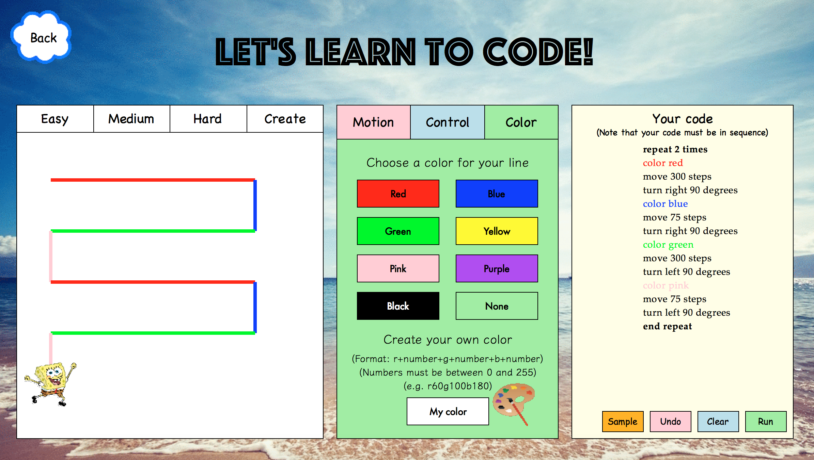

I enjoy making ideas into reality :D Some of my coding projects can be found in GitHub.
Sugilite Android App
Resources: Video demo; Published paper; Project website.
In Spring 2018, I worked as a research assistant in CMU HCII for the project Sugilite under Professor Brad A. Myers and Toby Li. Sugilite is a programming-by-demonstration system that enables users to create automation on smartphones. For example, if a user wants to order a Starbucks coffee, the user can voice record the command “order a Starbucks coffee” into the Sugilite Android app and demonstrate the task to order a coffee on the phone. Sugilite will then remember the steps and next time the user says the same command to Sugilite, it will execute the ordering process automatically.
The system has its own programming language that is readable by computers but not people who have no prior programming experience. My job was to convert the programming language to natural language in a way that any average user could understand. The results were published in the paper APPINITE: A Multi-Modal Interface for Specifying Data Descriptions in Programming by Demonstration Using Verbal Instructions in 2018 IEEE Symposium on Visual Languages and Human-Centric Computing (VL/HCC).
Avocado Project
Resources: Video demo.
Written in Python, this project is a tool for kids and new programmers to learn the concepts of programming. Following the instructions on the screen, users could enter commands to make the character move around and draw lines and shapes.